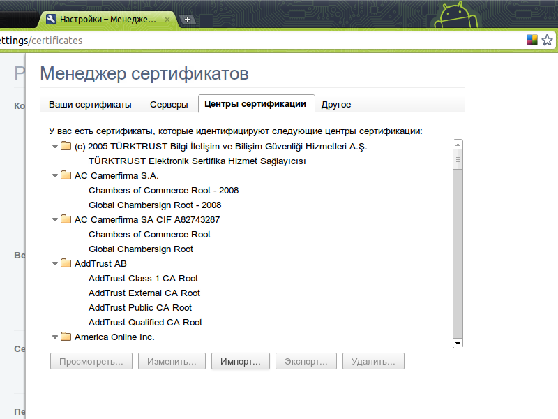
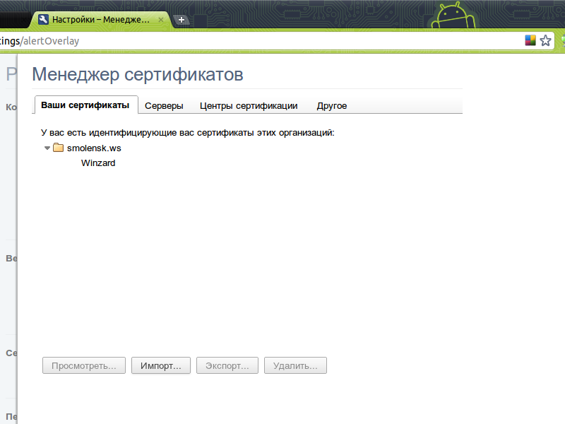
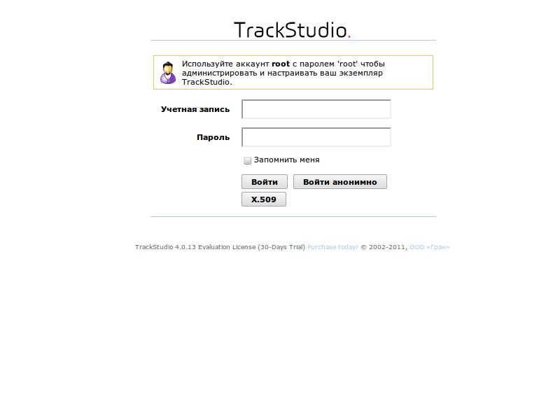

|
<< Click to Display Table of Contents >> Navigation: Rus > Руководство по установке > Настройка авторизации по X.509 |
TrackStudio поддерживает вход в систему с использованием клиентских сертификатов (X.509).
Создайте свой центр сертификации, серверный и клиентский ключи, как это описано в Virgo's Naive Stories
У вас должны получиться файлы ca.crt, ca.key и client.p12. Параметр CN серверного сертификата должен быть равен имени компьютера, параметр CN клиентского сертификата - логину пользователя в TrackStudio.
Откройте файл конфигурации jetty/etc/jetty-ssl.xml и раскомментируйте нижеприведенные строки, если они закомментированы.
<Call name="addConnector">
<Arg>
<New class="org.mortbay.jetty.security.SslSocketConnector">
<Set name="Port">8443</Set>
<Set name="maxIdleTime">30000</Set>
<Set name="handshakeTimeout">2000</Set>
<Set name="keystore">ssl/keystore</Set>
<Set name="password">changeit</Set>
<Set name="keyPassword">chagneit</Set>
<Set name="truststore">ssl/keystore</Set>
<Set name="trustPassword">chagneit</Set>
<Set name="handshakeTimeout">2000</Set>
<Set name="wantClientAuth">true</Set>
</New>
</Arg>
</Call>
1.Для сервера Jetty нужно создать общее хранилище сертификатов.
openssl pkcs12 -inkey ca.key -in ca.crt -export -out jetty.pkcs12
2.Скопируйте файл jetty.pkcs12 в директорию, в которую установлен ваш экземпляр TrackStudio.
3.Перейдите в эту директорию.
4.В терминале выполните команду
java -classpath jetty/lib/jetty-6.1.26.jar:jetty/lib/jetty-util-6.1.26.jar org.mortbay.jetty.security.PKCS12Import jetty.pkcs12 keystore
1.Импортируйте в браузер ca.crt как Authority

2.Импортируйте в браузер client.p12 как пользовательский сертификат

3.Войдите в систему, нажав на кнопку X.509
